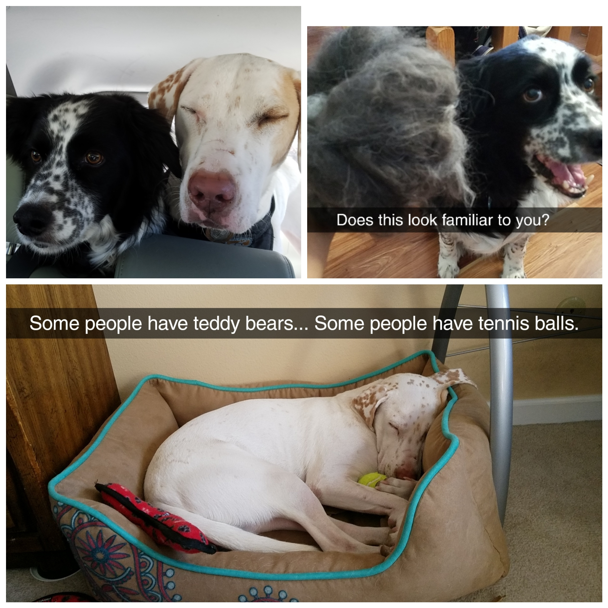

Information literacy instruction: guest lecture from Bridget Farrell, Coordinator of Library Instruction and Reference Services, University of Denver Libraries
User Profiles
Technical Services Cont.
Kiki Watch
Pet Pics
Shilling and Pilot
Announcements?
Administration
Lab #1 and #2 - Follow-up
Other types of libraries
Bibliography
Looking ahead: Instruction Assignment
Early submission policy: If you submit early, I may grade it - but feel free to re-submit if you like and I'll re-grade!
concerns?
Information Literacy instruction
defining information literacy
teaching information literacy
active learning as a technique
"Being able to effectively locate, evaluate, and apply information to meet a need is the foundation of lifelong learning" - Evans, p.71
"Give a man some information, feed their information need for a session. Teach a man information literacy, feed their need for a lifetime (or, at least a few years)" - Old Librarian Proverb
Information literacy
to "be able to recognize when information is needed and have the ability to locate, evaluate, and use effectively the needed information." - ALA 1989
Transliteracy: "ability to read, write, and interact across a range of platforms, tools, and media"
compare and evaluate information obtained from different sources.
organize, apply, and communicate information to others in appropriate ways.
synthesize and build upon existing information, contributing to the creation of new knowledge.
Types of instruction
formal instruction
e.g. tours and orientation; workshops on technology, searching skills, research skills
informal
remember that all interactions can be instructional! - it doesn't need to be designed as such
One-shot instruction: single session
What are the downsides to one-shot instruction? What are the upsides?
more realistic for scheduling
desire to cram as much information in <- less effective way of learning
course-integrated instruction
just-in-time librarianship
more effective learning
complicated logistics
Active Learning
Learning by participating in the process of learning - rather than sitting, listening, and memorizing
"anything that involves students in doing things and thinking about the things they are doing" (Bonwell & Eison, 1991).
"anything course-related that all students in a class session are called upon to do other than simply watching, listening and taking notes" (Felder & Brent (2009)